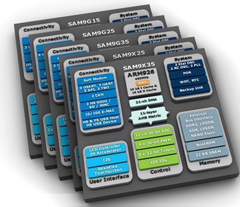
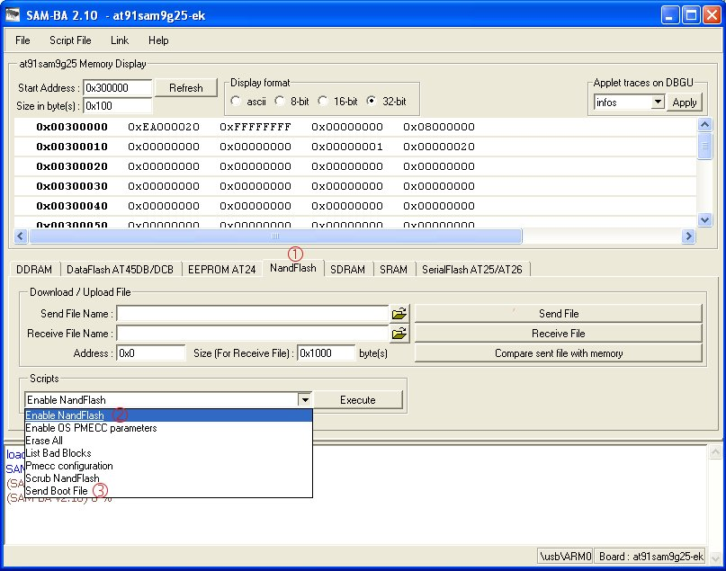
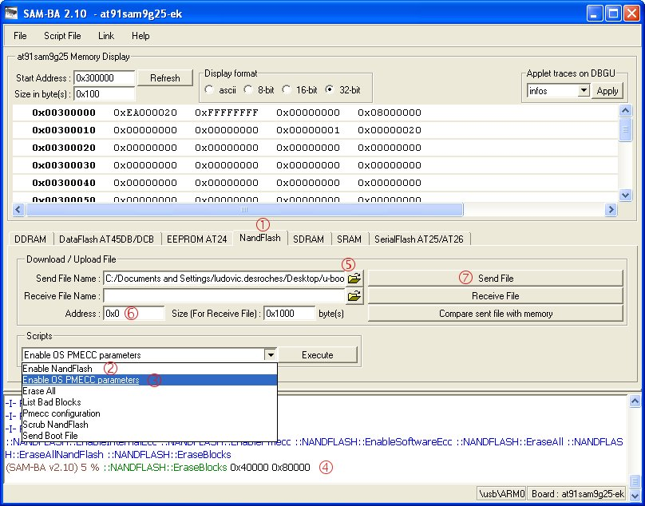
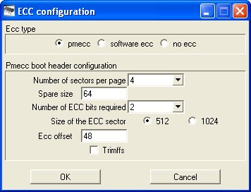

AT91SAM9x5 family special page
(for SAM9G15, SAM9G25, SAM9X25, SAM9G35 and SAM9X35)
Introduction
| Hi! Welcome to the Linux4SAM page dedicated to the newly introduced AT91SAM9X5 family. This page will cover the following chips: * at91sam9g15 * at91sam9g25 * at91sam9x25 * at91sam9g35 * at91sam9x35 and the associated Evaluation Kit. This page provides the latest information on this eMPU series in the same way as elsewhere on the site Linux4SAM. Each component is detailed in its own section just below. As is always done for the material we publish on Linux4SAM, These special releases will be integrated in each component release cycle and the associated Open Source upstream project. \ |
 |
GettingStarted
| |
Basic components
AT91Bootstrap
Pre-built binaries
| Board | Description | Binary |
|---|---|---|
| !NandFlash | ||
| at91sam9x5ek | AT91Bootstrap binary with 2nd level application in NandFlash | boot.bin |
| SD Card | ||
| at91sam9x5ek | AT91Bootstrap binary with 2nd level application in Micro SD Card | at91sam9x5ek-sdcardboot-3.1.bin rename it as BOOT.BIN while loading it on SD card. |
Boot capabilities matrix
Here is :| Product | Boot from SerialFlash (SPI0 CS0) |
Boot from SerialFlash (SPI0 CS1) |
Boot from NAND Flash |
Boot from SD card |
Boot from TWI{{TWI: Two Wires Interface is an I2C compatible bus}} EEPROM |
|---|---|---|---|---|---|
| at91sam9x5ek | |
|
|
|
|
Using AT91Bootstrap binaries
Boot from NAND flash with AT91Bootstrap
You will have to use SAM-BA to flash AT91Bootstrap. Here we are assuming you want to boot from NAND FLASH:  1. Choose the NandFlash media tab in the SAM-BA GUI. 2. Initialize the media choosing the Enable NandFlash action in the Scripts rolling menu and press Execute. 3. Select Send Boot File in the Scripts rolling menu and press Execute. Then select the bootstrap file and press Open; the media is written down. 4. Close SAM-BA, remove the USB cable.Boot from SD card with AT91Bootstrap
You can boot from SD card. To do this, you will need a SD Card with a FAT16/32 partition as first partition. Then you will have to copy the AT91Bootstrap binary file and the U-Boot binary file. These files must be respectively named BOOT.BIN and u-boot.bin.Build AT91Bootstrap from sources
AT91Booststrap has been created by Atmel to ease the loading of binaries from several boot media. The revision created for AT91SAM9x5 family is available on www.linux4sam.org FTP site: AT91Bootstrap-5series_1.2.tgzGetting AT91Bootstrap sources
You have to get AT91Bootstrap source code:wget ftp://ftp.linux4sam.org/pub/at91bootstrap/AT91Bootstrap3.1/AT91Bootstrap-5series_1.2.tgz tar xvzf AT91Bootstrap-5series_1.2.tgz cd AT91Bootstrap-5series_1.2
Configuring AT91Bootstrap and choosing the boot media
Before building AT91Bootstrap, you have to configure it for 5series boards and to indicate where you want your third stage bootloader to be located: in this example it will be U-Boot. If you want to run it from NAND FLASH use:make at91sam9x5nf_defconfigAnd if you want to run it from the SD card use:
make at91sam9x5sduboot_defconfig
CROSS_COMPILE variable. This is done like explained hereafter.
Then you can customize the AT91Bootstrap configuration with:
make menuconfig
Compiling AT91Bootstrap
Now you have to launch the AT91Bootstrap cross-compilation:make CROSS_COMPILE=<path_to_cross-compiler/cross-compiler-prefix->path_to_cross-compiler is only needed if it is not in your PATH. Usually cross-compiler-prefix- looks like
arm-linux- , arm-elf- or arm-none-linux-gnueabi- .
The result of this operation is a fresh AT91Bootstrap binary located in the binaries directory and called at91sam9x5ek-xxxboot-3.1.bin corresponding to the binary ELF file called at91sam9x5ek-xxxboot-3.1.elf.
-
at91sam9x5ek-nandflashboot-3.1.binis the binary file able to boot the application located in NAND FLASH. -
at91sam9x5ek-sdcardboot-3.1.binis the binary file able to boot the application calledu-boot.binlocated in the FAT formated SD card.
U-Boot
U-Boot binaries
Here are the U-Boot binaries, for this example the U-Boot environment is located into the NAND flash.| Board | Description | Binary |
|---|---|---|
| !NandFlash | ||
| at91sam9x5ek | u-boot binary with environment in *NandFlash* based on U-Boot revision 2010.06 |
u-boot.bin |
U-Boot 2010.06 experimental patch
| Description | Source | Patch |
|---|---|---|
| Add at91sam9x5 support to AT91 u-boot | u-boot 2010.06 archive u-boot 2010.06 tag on git tree |
u-boot-5series_1.0.patch |
Flashing U-Boot
You will have to use SAM-BA to flash U-Boot. Here we are assuming you want to put U-Boot and its environment into the NAND FLASH:  1. Choose the NandFlash media tab in the SAM-BA GUI. 2. Initialize the media choosing the Enable NandFlash action in the Scripts rolling menu and press Execute. 3. Select Enable OS PMECC parameters in the Scripts rolling menu and press Execute. The default ECC configuration should be ok so you should have this pop-up appearing: so press the
OK button.
4. To erase only the U-Boot part into the NAND FLASH, type this command after the SAM-BA prompt{{(SAM-BA v2.xx) n % prompt located at the bottom of the SAM-BA window.}}:
NANDFLASH::EraseBlocks 0x40000 0xBFFFFThe SAM-BA EraseBlocks command takes two parameter: a start and an end address of FLASH that you want to erase. 5. Press Send File Name Browse button and choose your U-Boot binary file. 6. Enter the proper address on media in the Address text field. You can find the product map in GettingStarted_9x5. So in our case, the value for U-Boot is 0x40000. 7. Press Send File button. 8. Close SAM-BA, remove the USB cable.
Building U-Boot
Getting U-Boot sources
You have to get U-Boot source code:wget ftp://ftp.denx.de/pub/u-boot/u-boot-2010.06.tar.bz2 tar xvjf u-boot-2010.06.tar.bz2 cd u-boot-2010.06Or:
git clone http://git.denx.de/u-boot.git cd u-boot git checkout v2010.06Then apply the at91 5series patch:
wget ftp://ftp.linux4sam.org/pub/uboot/u-boot-v2010.06/u-boot-5series_x.y.patch patch -p1 < u-boot-5series_x.y.patch
Configuring U-Boot and choosing where the U-Boot environment resides
Before building U-Boot, you have to configure it for 5series boards and to indicate where you want to store the environment. If you want to store it in NAND FLASH use:make at91sam9x5ek_nandflash_configAnd if you want to store it into the DataFlash use:
make at91sam9x5ek_dataflash_config
Compiling U-Boot
Now you have to launch the U-Boot cross-compilation:make CROSS_COMPILE=<path_to_cross-compiler/cross-compiler-prefix->path_to_cross-compiler is only needed if it is not in your PATH. Usually cross-compiler-prefix- looks like
arm-linux- , arm-elf- or arm-none-linux-gnueabi- .
The result of this operation is a fresh u-boot binary called u-boot.bin corresponding to the binary ELF file called u-boot.
-
u-boot.binis the file you should store on the board -
u-bootis the ELF format binary file you may use to debug u-boot through a JTAG link for instance.
Linux Kernel
Pre-built image
The kernel image is the same for the whole 5series. It will determine at runtime the particular SoC that it is running on.| 2.6.39 (2.6.39-at91-exp.tar.gz) | ||
|---|---|---|
| Board | Description | Binary |
| at91sam9x5ek | linux-2.6.39 uImage configured by at91sam9x5ek_defconfig \ |
uImage-2.6.39-r1-at91sam9x5ek.bin |
Flashing the Linux kernel image
Using SAM-BA
The procedure to flash the kernel image is the same as U-Boot, only two steps change: 1. Choose the NandFlash media tab in the SAM-BA GUI. 2. Initialize the media choosing the Enable NandFlash action in the Scripts rolling menu and press Execute. 3. Select Enable OS PMECC parameters in the Scripts rolling menu and press Execute. The default ECC configuration should be ok in the pop-up dialog box so just press theOK button.
4. To erase only the U-Boot part into the NAND FLASH, type this command after the SAM-BA prompt:
NANDFLASH::EraseBlocks 0x200000 0x7FFFFFThe SAM-BA EraseBlocks command takes two parameter: a start and an end address of FLASH that you want to erase. 5. Press Send File Name Browse button and choose your kernel image. 6. Enter the proper address on media in the Address text field. You can find the product map in GettingStarted_9x5. So in our case, the value for the kernel image is 0x200000. 7. Press Send File button. 8. Close SAM-BA, remove the USB cable.
Using U-Boot
You can also flash the kernel image with U-Boot. You must have configured your network access in U-Boot as the binary image will be transferred to the target using TFTP protocol.Type the following commands:
tftp 0x22000000 uImage-2.6.39-r1-at91sam9x5ek.bin nand erase 0x200000 0x600000 nand write 0x22000000 0x200000 0x250000 bootNote that last parameter is the actual size of the binary written. You may adapt it to the size of your kernel image.
Linux4SAM AT91SAM9x5 Experimental Patches
2.6.39-at91-exp.tar.gz
- Support for AT91SAM9x5 family ( SAM9G15, SAM9G25, SAM9X25, SAM9G35 and SAM9X35)
- DMA use on SD/MMC, SSC (I2S) audio, SPI and NAND flash peripherals
- NAND hardware ECC support using PMECC controller
- LCD with overlays and 2D acceleration
- ISI support using Video4Linux2 SoC interface
- Qtouch touch button
- CAN bus support for SAM9X25 and SAM9X35
- usual USB High-Speed and Ethernet (dual Ethernet on SAM9X25)
AT91SAM9x5 Linux kernel sources summary table
| Linux Kernel revision | Vanilla Linux Kernel | AT91 Maintainer patchset | Experimental patches |
|---|---|---|---|
| |
linux-2.6.39.tar.bz2 |
none needed \ | 2.6.39-at91-exp.tar.gz |
Building the Linux kernel
Getting source code
The at91 5series patch is based on the 2.6.39 Linux kernel version, so the first step is to get it:wget http://www.kernel.org/pub/linux/kernel/v2.6/linux-2.6.39.tar.bz2 tar xvjf linux-2.6.39.tar.bz2 cd linux-2.6.39Now you have to apply the Atmel patch series:
Download experimental patch archive:
wget ftp://ftp.linux4sam.org/pub/linux/2.6.xx.at91/2.6.xx-at91-exp.y.tar.gzDecompress archive with:
tar xvzf 2.6.xx-at91-exp.y.tar.gzAnd then apply patchset one patch after the other in proper order:
for p in 2.6.xx-at91-exp.y/*; do patch -p1 < $p ; doneFor this 2.6.39/5series example you will have to execute:
wget ftp://ftp.linux4sam.org/pub/linux/2.6.39-at91/2.6.39-at91-exp.tar.gz tar xvzf 2.6.39-at91-exp.tar.gz for p in 2.6.39-at91-exp/* ; do patch -p1 < $p ; done
Configuring and building the kernel
Firstly, use the 5series default kernel configuration:make ARCH=arm at91sam9x5ek_defconfigThen you can customize the kernel configuration with:
make ARCH=arm menuconfigBuild the Linux kernel image:
make ARCH=arm CROSS_COMPILE=<path_to_cross-compiler/cross-compiler-prefix->path_to_cross-compiler is only needed if it is not in your PATH. Usually cross-compiler-prefix- looks like
arm-linux- , arm-elf- or arm-none-linux-gnueabi- .
To produce a kernel image suitable for U-Boot:
mkimage -A arm -O linux -C none -T kernel -a 20008000 -e 20008000 -n linux-2.6 -d arch/arm/boot/zImage uImage-2.6.39-at91sam9x5ek.bin
Open source embedded distribution solutions
OpenEmbedded / Ångström
Angstom 2011.03 binaries
| Board | Description | Binary |
|---|---|---|
| at91sam9x5ek | Angstrom x11 (graphical) image tailored for AT91 UBI root filesystem | Angstrom-x11-at91sam9-image-eglibc-ipk-v20110624-at91sam9x5ek.rootfs.ubi |
| at91sam9x5ek | Angstrom console image tailored for AT91 UBI root filesystem Network centric distribution |
Angstrom-net-at91sam9-image-eglibc-ipk-v20110624-at91sam9x5ek.rootfs.ubi |
Flashing the root file system
Connect to the Flashing the root file system page to know how to deploy this UBI/UBIFS image on NAND flash.How to build Angstrom for AT91SAM9x5
Dedicated page that explains how to build Angstorm for AT91SAM9x5. It explains the procedure to obtain an Angstrom UBI/UBIFS image. ÅngströmBuildroot
Buildroot 2011.05 binaries
The Root filesystem image is a generic one for all AT91SAM9x5 boards. It's provided as a UBI image for NAND FLASH memory with page size of 2KBytes.| Board | Description | Binary |
|---|---|---|
| at91sam9x5ek | BuildRoot image tailored for AT91 UBI root filesystem | buildroot_2011.05-at91_5series_1.0.ubi |
Flashing the root file system
Connect to the Flashing the root file system page to know how to deploy this UBI/UBIFS image on NAND flash.How to build BuildRoot for AT91SAM9x5
Dedicated page that explains how to build BuildRoot for AT91SAM9x5. It explains the procedure to build a BuildRoot UBI/UBIFS image.FAQ
FAQ_9x5

| I | Attachment | Action | Size | Date | Who | Comment |
|---|---|---|---|---|---|---|
| |
SAM-BA_5series_u-boot.jpg | manage | 118.7 K | 2011-07-11 - 08:52 | NicolasFerre | |
| |
SAM-BA_5series_u-boot_ecc.jpg | manage | 21.8 K | 2011-07-11 - 08:52 | NicolasFerre | |
| |
block_9X5_combined.png | manage | 148.0 K | 2011-07-11 - 08:53 | NicolasFerre | |
| |
sam-ba_5series_bootstrap.jpg | manage | 100.1 K | 2011-07-11 - 08:53 | NicolasFerre |
r10 - 15 Jun 2017 - 14:14:10 - NicolasFerre

{kind=link}
{kind=link}
{kind=link}
{kind=link}
{kind=link}
{kind=link}
{kind=link}
{kind=link}
Copyright © by the contributing authors. All material on this collaboration platform is the property of the contributing authors.
Linux® is the registered trademark of Linus Torvalds in the U.S. and other countries.
Microchip® and others, are registered trademarks or trademarks of Microchip Technology Inc. and its subsidiaries. 
Arm® and others are registered trademarks or trademarks of Arm Limited (or its affiliates). Other terms and product names may be trademarks of others.
Ideas, requests, contributions ? Connect to LinksToCommunities page.